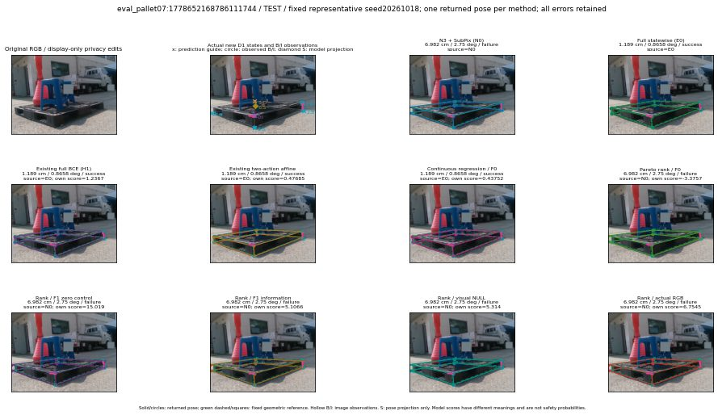

실선은 반환 자세, 초록 점선은 고정 기하 참조입니다. S는 영상 관측이 아닙니다. 점수는 모델별 의미가 다르며 보정된 안전 확률이 아닙니다. 개인정보 처리는 표시 사본에만 적용했습니다.
| 방법·seed | 위치 / 회전 / 공동성공 | 실제 출처 | 선택 후보 | 각 모델 자체 점수 |
|---|---|---|---|---|
| N0 | 6.982 cm / 2.75 deg / failure | N0 | N/A | N/A |
| E0 | 1.189 cm / 0.8658 deg / success | E0 | N/A | N/A |
| E0_REGENERATED | 1.189 cm / 0.8658 deg / success | E0 | E0_REGENERATED | N/A |
| POSEFIX_SUBPIX_PF_ANCHOR | 3.411 cm / 2.557 deg / success | OTHER | N/A | N/A |
| POSEFIX_SUBPIX_YOLO_ANCHOR | 3.973 cm / 2.511 deg / success | OTHER | N/A | N/A |
| D1_H1_MLP_s20261018 | 1.189 cm / 0.8658 deg / success | E0 | E0_REGENERATED | 1.2366865873336792 |
| D1_H1_MLP_s20261019 | 1.189 cm / 0.8658 deg / success | E0 | E0_REGENERATED | 0.9980801939964294 |
| D1_H1_MLP_s20261020 | 1.189 cm / 0.8658 deg / success | E0 | E0_REGENERATED | 1.4134576320648193 |
| D1_H1_PAIR_MLP_s20261018 | 1.189 cm / 0.8658 deg / success | E0 | E0_REGENERATED | -0.3345743417739868 |
| D1_H1_PAIR_MLP_s20261019 | 1.189 cm / 0.8658 deg / success | E0 | E0_REGENERATED | 0.30599305033683777 |
| D1_H1_PAIR_MLP_s20261020 | 1.189 cm / 0.8658 deg / success | E0 | E0_REGENERATED | 0.849261999130249 |
| D1_H1_PAIR_ROLE_AFFINE_s20261018 | 1.189 cm / 0.8658 deg / success | E0 | E0_REGENERATED | 0.4768525958061218 |
| D1_H1_PAIR_ROLE_AFFINE_s20261019 | 1.189 cm / 0.8658 deg / success | E0 | E0_REGENERATED | 0.6465721726417542 |
| D1_H1_PAIR_ROLE_AFFINE_s20261020 | 1.189 cm / 0.8658 deg / success | E0 | E0_REGENERATED | 0.3584449291229248 |
| R_CONT_F0_s20261018 | 1.189 cm / 0.8658 deg / success | E0 | E0_REGENERATED | 0.4375245273113251 |
| R_CONT_F0_s20261019 | 1.189 cm / 0.8658 deg / success | E0 | E0_REGENERATED | 0.5176957249641418 |
| R_CONT_F0_s20261020 | 1.189 cm / 0.8658 deg / success | E0 | E0_REGENERATED | 0.5414189100265503 |
| R_ORDER_F0_s20261018 | 6.982 cm / 2.75 deg / failure | N0 | N0 | -3.3757433891296387 |
| R_ORDER_F0_s20261019 | 1.189 cm / 0.8658 deg / success | E0 | E0_REGENERATED | -1.415393590927124 |
| R_ORDER_F0_s20261020 | 6.982 cm / 2.75 deg / failure | N0 | N0 | -3.2704851627349854 |
| R_ORDER_F1_ZERO_s20261018 | 6.982 cm / 2.75 deg / failure | N0 | N0 | 15.019218444824219 |
| R_ORDER_F1_ZERO_s20261019 | 1.189 cm / 0.8658 deg / success | E0 | E0_REGENERATED | -1.4507406949996948 |
| R_ORDER_F1_ZERO_s20261020 | 1.189 cm / 0.8658 deg / success | E0 | E0_REGENERATED | 6.680160999298096 |
| R_ORDER_F1_s20261018 | 6.982 cm / 2.75 deg / failure | N0 | N0 | 5.1065754890441895 |
| R_ORDER_F1_s20261019 | 1.189 cm / 0.8658 deg / success | E0 | E0_REGENERATED | 6.320592880249023 |
| R_ORDER_F1_s20261020 | 1.189 cm / 0.8658 deg / success | E0 | E0_REGENERATED | 3.7350995540618896 |
| V_ORDER_NULL_s20261018 | 6.982 cm / 2.75 deg / failure | N0 | N0 | 5.314035415649414 |
| V_ORDER_NULL_s20261019 | 1.189 cm / 0.8658 deg / success | E0 | E0_REGENERATED | 2.157853841781616 |
| V_ORDER_NULL_s20261020 | 1.189 cm / 0.8658 deg / success | E0 | E0_REGENERATED | 4.672849178314209 |
| V_ORDER_RGB_s20261018 | 6.982 cm / 2.75 deg / failure | N0 | N0 | 6.754479885101318 |
| V_ORDER_RGB_s20261019 | 1.189 cm / 0.8658 deg / success | E0 | E0_REGENERATED | 1.9396388530731201 |
| V_ORDER_RGB_s20261020 | 1.189 cm / 0.8658 deg / success | E0 | E0_REGENERATED | -7.227264404296875 |